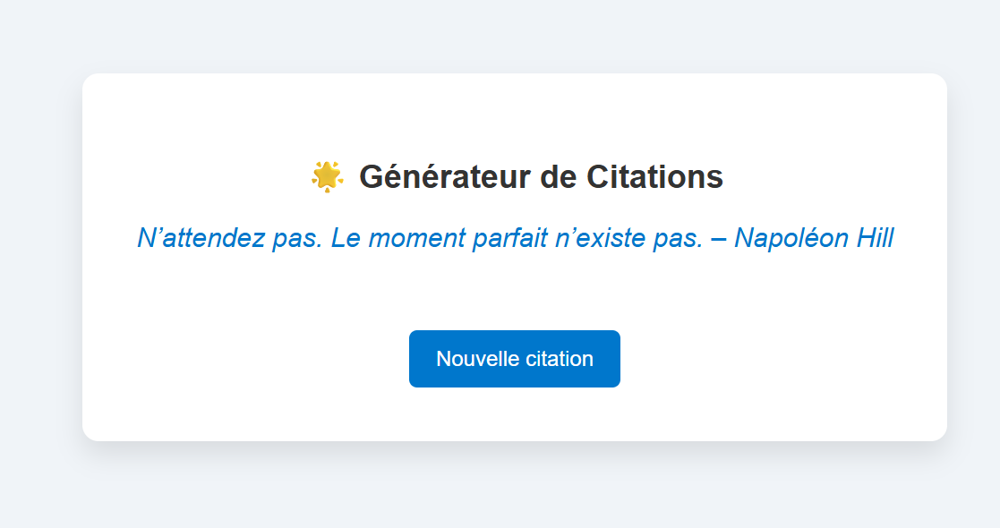
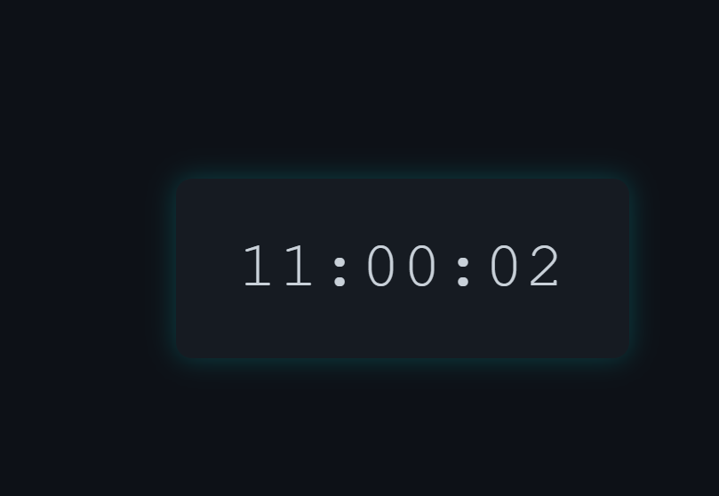

Mes Projets
Générateur de Citations
Un outil motivant qui génère des citations aléatoires pour booster la journée de l’utilisateur.
Technologies utilisées: HTML, CSS, JavaScript

Voir
To-Do Liste
Une application pour organiser ses tâches quotidiennes, avec ajout, suppression et validation des éléments.
Technologies utilisées: HTML, CSS, JavaScript
Compteur Interactif
Une mini-app simple mais efficace qui augmente ou diminue une valeur numérique avec style.
Technologies utilisées: HTML, CSS, JavaScript
Slider d'Images
Un carousel visuel qui défile automatiquement des images provenant d’une source dynamique (API Picsum).
Technologies utilisées: HTML, CSS, JavaScript
Horloge Numérique
Une horloge fonctionnelle en temps réel qui affiche l’heure actuelle en continu avec un style moderne.
Technologies utilisées: HTML, CSS, JavaScript

Voir